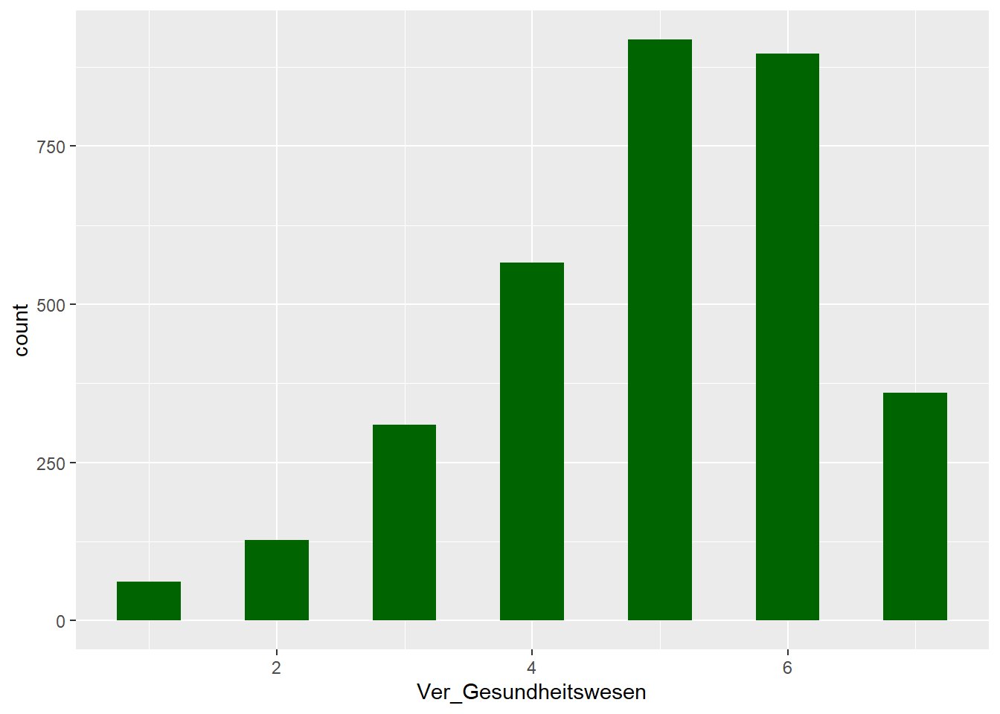
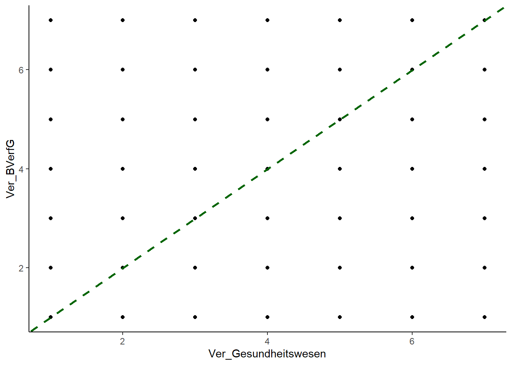
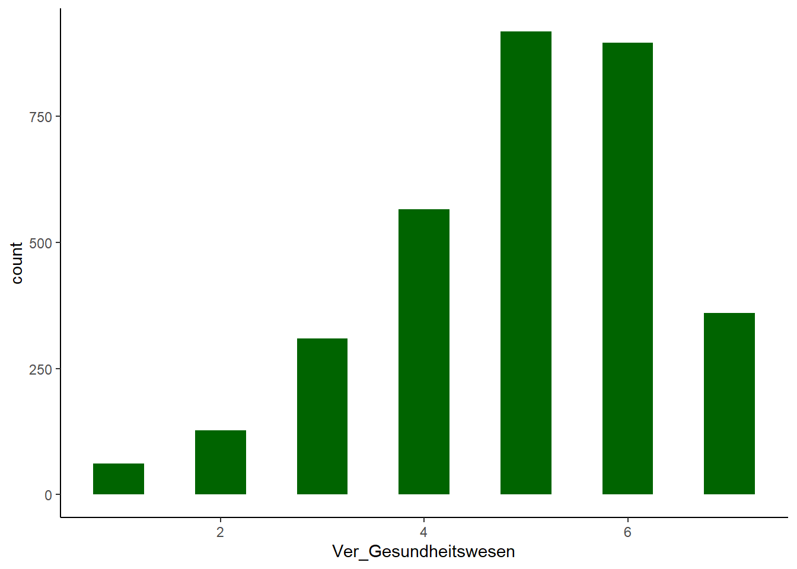
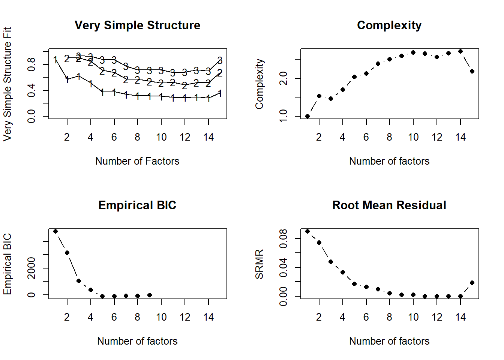

if(!require("pacman")) {install.packages("pacman");library(pacman)}
p_load(tidyverse, ggplot2, haven, psych, psy, nFactors, htmlTable)- 1
-
Laden der Pakete mit
p_load

Wir möchten - wie bereits in Kaptitel 5.1 angesprochen - ein Index für die von uns angenommene latente Variable Vertrauen in gesellschaftliche Institutionen bilden. An dieser Stelle müssten wir uns zunächst Gedanken über das Konstrukt Vertrauen in gesellschaftliche Institutionen machen und eine theoretische Grundlage entwickeln. Wir kürzen diesen Prozess an dieser Stelle etwas ab und möchten die lesende Person ermutigen einen kurzen Blick in den Aufsatz von Nina Steindl aus dem Jahr 2019 zum Vertrauen in gesellschaftliche Institutionen von Journalist:innen zu werfen. Wenn wir eine theoretische Vorstellung entwickelt haben, können wir mit der empirische Überprüfung der latenten Variable mittels explorativer Faktorenanalyse starten.
Die explorative Faktorenanalyse (EFA) ist eine statistischen Methoden, die dazu dient, die kleinste Anzahl hypothetischer Konstrukte (auch als Faktoren, Dimensionen, latente Variablen bezeichnet) zu ermitteln. Indem die beobachtete Kovarianz zwischen einer Reihe von Messvariablen (auch als beobachtete Variablen oder Indikatoren bezeichnet) erklärt wird. Konkret sollen die gemeinsamen Faktoren ermittelt werden, die die Struktur zwischen den gemessenen Variablen erklären. Wobei wir in den Sozialwissenschaften davon ausgehen, dass es sich bei diesen Faktoren um unbeobachtbare Merkmale - also latente Variablen - handelt.
Ein Faktor ist eine unbeobachtbare Variable, die mehr als eine beobachtete Messgröße beeinflusst und für die Korrelationen zwischen diesen beobachteten Messgrößen verantwortlich ist. Mit anderen Worten, die beobachteten Maße stehen in Beziehung zueinander, weil sie eine gemeinsame Ursache haben (d. h. sie werden von demselben zugrunde liegenden Konstrukt beeinflusst); wenn das latente Konstrukt abgetrennt wurde, sind die Interkorrelationen zwischen den beobachteten Maßen gleich Null. (Brown, 2015: 10)
In unserem Fall interessiert uns die latente Variable Vertrauen in gesellschaftliche Institutionen. Wir möchten Wissen, ob wir diese latente Variable bzw. diesen Faktor aus den einzelenen Indikatoren (den Fragen aus dem Allbus-Fragebogen) ableiten können. Konkret müssen wir überprüfen, ob sich die theoretisch angenommene latenten Variable auch in den Daten zu finden ist. Hierfür können wir die Faktorenanalyse oder Principal Component Analysis (PCA) verwenden.
Wir beginnen zunächst mit der Vorbereitung und Laden die notwendigen Pakete.
if(!require("pacman")) {install.packages("pacman");library(pacman)}
p_load(tidyverse, ggplot2, haven, psych, psy, nFactors, htmlTable)p_load
Danach laden wir die Daten aus dem Allbus.
Die Variablen werden aufgrund ihrer Nützlichkeit als Indikatoren für die zu untersuchende latente Variable ausgewählt. Entsprechend ist es wichtig, dass die Variablen inhaltliche, diskriminante und konvergente Validität aufweisen. Etwas vereinfacht ausgedrückt sollten die Indikatoren über eine inhaltliche Passung zur latenten Variable verfügen, möglichst gut von anderen latenten Variablen abgrenzbar und mit mehreren unterschiedlichen Arten der Messung nachweisbar sein.
In unserem Fall möchten wir das Vertrauen in gesellschaftliche Institutionen untersuchen, entsprechend sollten wir Variablen bzw. Indikatoren auswählen, die die unterschiedlichen Bestandteile der latenten Variable abdecken.
Ganz konkret wählen wir Variablen aus, die das…
… erfassen.
Für die statistische Identifizierung einer latenten Variablen bzw. eines Faktors werden mindestens drei gemessene Variablen benötigt, obwohl mehr Indikatoren vorzuziehen sind. Es werden beispielsweise auch vier bis sechs Indikatoren pro Faktor empfohlen. Im Allgemeinen funktioniert die EFA besser, wenn jeder Faktor überdeterminiert ist (d. h. es werden mehrere gemessene Variablen von der zu entdeckenden latenten Variable bzw. Faktor beeinflusst). Unabhängig von der Anzahl sollten Variablen, die voneinander abhängig sind, nicht in eine EFA einbezogen werden.
allbus_vertrauen = daten %>%
select(pt01:pt20) %>%
mutate(across(pt01:pt20, ~ as.numeric(.))) %>%
mutate(across(pt01:pt20, ~ if_else(.%in% c(-9, -11, -42), NA,.))) %>%
na.omit()daten
pt01 bis pt20 aus
mutate und across ermöglicht es uns die Funktion as.numeric in einer Zeile auf alle zuvor ausgewählten Variablen anzuwenden. Die ~ gibt den Start der anzuwenden Funktion (hier as.numeric an), der Punkt innerhalb der Klammer der as.numeric Funktion dient als eine Art Platzhalter für die zuvor ausgewählten Variablen
if_elsezurück. Dabei handelt es sich um ein Entweder-Oder-Befehl. Konkret wird zunächst eine Bedingung geprüft und dann auf dieser Grundlage entweder Option 1 oder Option 2 ausgeführt. Der Punkt vor %in% dient wiederum als Platzhalter, mit dem Ausdruck %in% prüfen wir, ob die nachfolgenden Werte (also c(-9, -11, -42)) in der jeweiligen Variable vorkommen. Hierbei handelt es sich um unsere Bedingung für den Entweder-Oder-Befehl. Wenn einer der Werte aus der geprüften Variable einem der spezifizierten Werte entspricht - also unsere Bedingung erfüllt - wird dieser durch NA ersetzt. Ist die Bedingung nicht erfüllt, wird die andere Option ausgeführt und der bereits existierende Wert wird beibehalten.
na.omit fehlende Werte aus dem Datensatz
Wir bennen die ausgewählten Indikatoren um, damit die Bezeichnungen der Indikatoren für uns leichter zu merken sind.
allbus_vertrauen = allbus_vertrauen %>%
rename(Ver_Gesundheitswesen = pt01,
Ver_BVerfG = pt02,
Ver_Bundestag = pt03,
Ver_Verwaltung = pt04,
Ver_kath_Kirche = pt06,
Ver_evan_Kirche = pt07,
Ver_Justiz = pt08,
Ver_TV = pt09,
Ver_Zeitung = pt10,
Ver_Uni = pt11,
Ver_Regierung = pt12,
Ver_Polizei = pt14,
Ver_Parteien = pt15,
Ver_Kom_EU = pt19,
Ver_EU_Par = pt20)
htmlTable(head(allbus_vertrauen))rename Befehl können wir die Variablen umbennen
htmlTable für eine schönere Darstellung der Tabelle sowie head, um uns die ersten paar Zeilen des Datensatzes allbus_vertrauen anzeigen zu lassen
| Ver_Gesundheitswesen | Ver_BVerfG | Ver_Bundestag | Ver_Verwaltung | Ver_kath_Kirche | Ver_evan_Kirche | Ver_Justiz | Ver_TV | Ver_Zeitung | Ver_Uni | Ver_Regierung | Ver_Polizei | Ver_Parteien | Ver_Kom_EU | Ver_EU_Par | |
|---|---|---|---|---|---|---|---|---|---|---|---|---|---|---|---|
| 1 | 7 | 7 | 4 | 2 | 3 | 7 | 4 | 2 | 4 | 7 | 6 | 3 | 3 | 5 | 5 |
| 2 | 4 | 7 | 4 | 4 | 2 | 5 | 5 | 5 | 5 | 5 | 6 | 5 | 4 | 5 | 6 |
| 3 | 3 | 4 | 5 | 6 | 1 | 3 | 6 | 4 | 4 | 4 | 5 | 6 | 4 | 4 | 4 |
| 4 | 5 | 5 | 4 | 5 | 3 | 5 | 4 | 5 | 6 | 6 | 4 | 5 | 3 | 5 | 5 |
| 5 | 4 | 7 | 5 | 3 | 2 | 2 | 5 | 3 | 4 | 5 | 5 | 6 | 3 | 3 | 3 |
| 6 | 3 | 3 | 3 | 3 | 1 | 2 | 3 | 3 | 3 | 4 | 4 | 4 | 2 | 2 | 2 |
Neben der Auswahl der Variablen bzw. Indikatoren müssen auch die Fälle (in unserem Fall die Anzahl der befragten Personen) festgelegt werden. Hier sollten wir uns zunächst fragen, ob die Stichprobe der Teilnehmer:innen in Bezug auf die gemessenen Indikatoren sinnvoll ist? Handelt es sich um eine repräsentative Stichprobe? Bei dem Allbus ist das der Fall und entsprechend können wir davon ausgehen, dass wir eine passende Stichprobe für die Durchführung eine EFA vorliegen haben.
Wir werfen einen kurzen Blick in die deskriptive Statistik für unseren Teildatensatz, um ein besseres Verständnis für die Daten zu erhalten.
summary Befehl können wir uns die deskritpive Statistik ausgeben lassen
Ver_Gesundheitswesen Ver_BVerfG Ver_Bundestag Ver_Verwaltung
Min. :1.000 Min. :1.000 Min. :1.000 Min. :1.000
1st Qu.:4.000 1st Qu.:4.000 1st Qu.:3.000 1st Qu.:4.000
Median :5.000 Median :6.000 Median :4.000 Median :5.000
Mean :4.939 Mean :5.255 Mean :4.058 Mean :4.482
3rd Qu.:6.000 3rd Qu.:6.000 3rd Qu.:5.000 3rd Qu.:5.000
Max. :7.000 Max. :7.000 Max. :7.000 Max. :7.000
Ver_kath_Kirche Ver_evan_Kirche Ver_Justiz Ver_TV
Min. :1.000 Min. :1.00 Min. :1.000 Min. :1.000
1st Qu.:1.000 1st Qu.:1.00 1st Qu.:4.000 1st Qu.:3.000
Median :2.000 Median :3.00 Median :5.000 Median :4.000
Mean :2.331 Mean :3.04 Mean :4.581 Mean :3.577
3rd Qu.:3.000 3rd Qu.:4.00 3rd Qu.:6.000 3rd Qu.:4.000
Max. :7.000 Max. :7.00 Max. :7.000 Max. :7.000
Ver_Zeitung Ver_Uni Ver_Regierung Ver_Polizei Ver_Parteien
Min. :1.000 Min. :1.000 Min. :1.000 Min. :1.000 Min. :1.00
1st Qu.:3.000 1st Qu.:4.000 1st Qu.:3.000 1st Qu.:4.000 1st Qu.:2.00
Median :4.000 Median :5.000 Median :4.000 Median :5.000 Median :3.00
Mean :4.012 Mean :5.203 Mean :4.054 Mean :4.948 Mean :3.19
3rd Qu.:5.000 3rd Qu.:6.000 3rd Qu.:5.000 3rd Qu.:6.000 3rd Qu.:4.00
Max. :7.000 Max. :7.000 Max. :7.000 Max. :7.000 Max. :7.00
Ver_Kom_EU Ver_EU_Par
Min. :1.000 Min. :1.000
1st Qu.:2.000 1st Qu.:2.000
Median :4.000 Median :4.000
Mean :3.515 Mean :3.556
3rd Qu.:5.000 3rd Qu.:5.000
Max. :7.000 Max. :7.000 Die Faktorenanalyse bringt, wie jedes statistische Verfahren, eine Reihe von Vorraussetzungen mit. Diese Vorraussetzungen sollten wir kennen und bei der Anwendung der Faktorenanalyse beachten. Viele der Vorraussetzungen beziehen sich auf Pearson-Korrelationskoeffizienten, welcher die statistsiche Grundlage für die Berechnung der Faktoren bildet.
colors = c(rep("darkgreen", 1))
ggplot(allbus_vertrauen, aes(x = Ver_Gesundheitswesen)) +
geom_histogram(binwidth = 0.5, fill = colors)Ver_Gesundheitswesen. Die restlichen Variablen sollten auch überprüft werden.

ggplot(allbus_vertrauen, aes(x = Ver_Gesundheitswesen, y = Ver_BVerfG)) +
geom_point() +
geom_abline(linetype = "dashed", color = "darkgreen", size = 1)Ver_Gesundheitswesen & Ver_BVerfG. Die restlichen Variablen sollten auch überprüft werden.

colors = c(rep("darkgreen", 1))
ggplot(allbus_vertrauen, aes(x = Ver_Gesundheitswesen)) +
geom_histogram(binwidth = 0.5, fill = colors)Ver_Gesundheitswesen. Ein p-Wert unter 0.05 = keine Normalverteilung und ein p-Wert über 0.05 = Normalverteilung

Shapiro-Wilk normality test
data: allbus_vertrauen$Ver_Gesundheitswesen
W = 0.92081, p-value < 2.2e-16Level der Messung: Bei Pearson-Korrelationen wird davon ausgegangen, dass normalverteilte Variablen auf Intervall- oder Verhältnisskalen gemessen werden, d. h. es handelt sich um kontinuierliche Daten mit gleichen Intervallen. Diese Eigenschaften treffen nicht auf ordinale (bspw. Kategorien) oder dochotome (bspw. Wahr-Falsch-Items) Variablen zu, was sich negativ auf Pearson-Korrelationskoeffizieten auswirkt und zu verzerrten Ergebnissen führen kann. Allerdings ist ein beträchtlicher Teil der Daten, mit denen wir zu tun haben, ordinal oder dichotom skaliert, um auch mit diesen Daten arbeiten zu können nutzen wir die polychorische Korrelation, welche robuster Nicht-Normalverteilung ist.
Fehlende Werte: In jeder Studie sollten wir die Anzahl und die Art der fehlenden Werte sowie die Gründe und die Methoden für den Umgang mit diesen Daten angegeben werden.
allbus_vertrauen = allbus_vertrauen %>%
mutate(across(Ver_Gesundheitswesen:Ver_EU_Par, ~ ifelse(.%in% c(-9, -11, -42), NA,.))) %>%
na.omit()if_elsezurück. Dabei handelt es sich um ein Entweder-Oder-Befehl. Konkret wird zunächst eine Bedingung geprüft und dann auf dieser Grundlage entweder Option 1 oder Option 2 ausgeführt. Der Punkt vor %in% dient wiederum als Platzhalter. Während %in% angibt, ob die nachfolgenden Werte (also c(-9, -11, -42)) in der jeweiligen Variable vorkommen. Hierbei handelt es sich um unsere Bedingung für den Entweder-Oder-Befehl. Wenn einer der Werte aus der geprüften Variable einem der spezifizierten Werte entspricht - also unsere Bedingung erfüllt - wird dieser durch NA ersetzt. Ist die Bedingung nicht erfüllt, wird die andere Option ausgeführt und der bereits existierende Wert wird beibehalten.
na.omit fehlende Werte aus dem Datensatz
htmlTable Funktion ermöglicht uns eine schönere Darstellung der Tabelle, round rundet die Werte auf die von uns mit digits = 3 festgelegten drei Nachkommastellen, während wir mit cor die Korrelationen für die Werte in unserem Datensatz allbus_vertrauen berechnen
| Ver_Gesundheitswesen | Ver_BVerfG | Ver_Bundestag | Ver_Verwaltung | Ver_kath_Kirche | Ver_evan_Kirche | Ver_Justiz | Ver_TV | Ver_Zeitung | Ver_Uni | Ver_Regierung | Ver_Polizei | Ver_Parteien | Ver_Kom_EU | Ver_EU_Par | |
|---|---|---|---|---|---|---|---|---|---|---|---|---|---|---|---|
| Ver_Gesundheitswesen | 1 | 0.435 | 0.446 | 0.375 | 0.184 | 0.21 | 0.384 | 0.337 | 0.334 | 0.37 | 0.43 | 0.413 | 0.349 | 0.359 | 0.357 |
| Ver_BVerfG | 0.435 | 1 | 0.629 | 0.397 | 0.148 | 0.223 | 0.635 | 0.385 | 0.424 | 0.474 | 0.561 | 0.45 | 0.429 | 0.456 | 0.476 |
| Ver_Bundestag | 0.446 | 0.629 | 1 | 0.553 | 0.267 | 0.323 | 0.571 | 0.483 | 0.487 | 0.42 | 0.816 | 0.445 | 0.677 | 0.656 | 0.661 |
| Ver_Verwaltung | 0.375 | 0.397 | 0.553 | 1 | 0.274 | 0.306 | 0.471 | 0.361 | 0.377 | 0.384 | 0.485 | 0.422 | 0.472 | 0.456 | 0.455 |
| Ver_kath_Kirche | 0.184 | 0.148 | 0.267 | 0.274 | 1 | 0.699 | 0.23 | 0.2 | 0.202 | 0.138 | 0.261 | 0.219 | 0.301 | 0.288 | 0.284 |
| Ver_evan_Kirche | 0.21 | 0.223 | 0.323 | 0.306 | 0.699 | 1 | 0.271 | 0.258 | 0.279 | 0.2 | 0.327 | 0.27 | 0.35 | 0.328 | 0.325 |
| Ver_Justiz | 0.384 | 0.635 | 0.571 | 0.471 | 0.23 | 0.271 | 1 | 0.356 | 0.418 | 0.453 | 0.56 | 0.53 | 0.48 | 0.534 | 0.541 |
| Ver_TV | 0.337 | 0.385 | 0.483 | 0.361 | 0.2 | 0.258 | 0.356 | 1 | 0.714 | 0.378 | 0.49 | 0.351 | 0.492 | 0.411 | 0.415 |
| Ver_Zeitung | 0.334 | 0.424 | 0.487 | 0.377 | 0.202 | 0.279 | 0.418 | 0.714 | 1 | 0.488 | 0.502 | 0.365 | 0.489 | 0.456 | 0.461 |
| Ver_Uni | 0.37 | 0.474 | 0.42 | 0.384 | 0.138 | 0.2 | 0.453 | 0.378 | 0.488 | 1 | 0.467 | 0.409 | 0.368 | 0.43 | 0.435 |
| Ver_Regierung | 0.43 | 0.561 | 0.816 | 0.485 | 0.261 | 0.327 | 0.56 | 0.49 | 0.502 | 0.467 | 1 | 0.494 | 0.719 | 0.699 | 0.694 |
| Ver_Polizei | 0.413 | 0.45 | 0.445 | 0.422 | 0.219 | 0.27 | 0.53 | 0.351 | 0.365 | 0.409 | 0.494 | 1 | 0.414 | 0.374 | 0.37 |
| Ver_Parteien | 0.349 | 0.429 | 0.677 | 0.472 | 0.301 | 0.35 | 0.48 | 0.492 | 0.489 | 0.368 | 0.719 | 0.414 | 1 | 0.707 | 0.696 |
| Ver_Kom_EU | 0.359 | 0.456 | 0.656 | 0.456 | 0.288 | 0.328 | 0.534 | 0.411 | 0.456 | 0.43 | 0.699 | 0.374 | 0.707 | 1 | 0.957 |
| Ver_EU_Par | 0.357 | 0.476 | 0.661 | 0.455 | 0.284 | 0.325 | 0.541 | 0.415 | 0.461 | 0.435 | 0.694 | 0.37 | 0.696 | 0.957 | 1 |
Noch zu prüfen ist die Korrelation der Items miteinander, hierfür nehmen wir den Bartlett Test.
$chisq
[1] 33164.76
$p.value
[1] 0
$df
[1] 105Bei großen Stichprobenumfängen, wie in unserem Fall mit dem Allbus, reagiert der Bartlett-Test selbst auf geringfügige Abweichungen vom Zufallsprinzip empfindlich, so dass seine Ergebnisse durch ein Maß für die Stichprobenadäquanz ergänzt werden sollten. Das Kaiser-Meyer-Olkin (KMO; Kaiser, 1974) Maß für die Stichprobenadäquanz ist das Verhältnis von Korrelationen und partiellen Korrelationen, das das Ausmaß widerspiegelt, in dem Korrelationen eine Folge der über alle Variablen geteilten Varianz sind und nicht der von bestimmten Variablenpaaren geteilten Varianz.
Kaiser-Meyer-Olkin factor adequacy
Call: KMO(r = allbus_vertrauen)
Overall MSA = 0.89
MSA for each item =
Ver_Gesundheitswesen Ver_BVerfG Ver_Bundestag
0.96 0.91 0.91
Ver_Verwaltung Ver_kath_Kirche Ver_evan_Kirche
0.95 0.73 0.78
Ver_Justiz Ver_TV Ver_Zeitung
0.94 0.87 0.88
Ver_Uni Ver_Regierung Ver_Polizei
0.94 0.92 0.94
Ver_Parteien Ver_Kom_EU Ver_EU_Par
0.97 0.83 0.83 KMO-Werte reichen von 0,00 bis 1,00 und können sowohl für die gesamte Korrelationsmatrix als auch für jede gemessene Variable berechnet werden. Insgesamt sind KMO-Werte ≥.70 erwünscht und Werte unter .50 werden im Allgemeinen als inakzeptabel angesehen. In diesem Fall ist die Korrelationsmatrix nicht faktoriell.
Wenn wir den Begriff Faktorenanalyse verwenden, meinen wir meistens zwei eigentlich unterschiedliche Verfahren, die sich in Zweck und Berechnung unterscheiden: die Hauptkomponentenanalyse (PCA) und die explorative Faktorenanalyse. Die Hauptkomponentenanalyse analysiert die gesamte Korrelationsmatrix und zielt darauf ab, Daten zu reduzieren und dabei so viele Informationen aus dem ursprünglichen Datensatz wie möglich zu erhalten. Zu diesem Zweck berechnet die Hauptkomponentenanalyse sogenannte Linearkombinationen der ursprünglichen Messvariablen, die so viele Informationen wie möglich erklären. Diese neuen Messvariablen werden als sogenannte Komponenten bezeichnet und sind im engeren Sinn keine latenten Konstrukte.
Die Faktorenanalyse versucht im Unterschied dazu, die Gesamtvarianz der gemessenen Variablen in gemeinsame Varianz (Kommmunialität oder h2) und die einzigartige Varianzen (u2) zu trennen. Dies geschieht indem eine reduzierte Korrelationsmatrix analysiert wird, bei der eine Schätzung der gemeinsamen Varianz jeder Messvariablen auf der Diagonalen der Korrelationsmatrix platziert wird.
Zusammenfassend liefern beide Methoden, also sowohl die PCA als auch die Faktorenanalyse eine Schätzungen der Gemeinsamkeit, aber nur die Faktorenanalyse kann die Einzigartigkeit (u2) jeder gemessenen Variable schätzen.
Die meisten Methodiker:innen empfehlen, dass die explorative Faktorenanalyse verwendet wird, um latente Konstrukte zu identifizieren. Fabrigar und Wegener (2012) empfahlen zum Beispiel Folgendes:
When the goal of research is to identify latent constructs for theory building or to create measurement instruments in which the researcher wishes to make the case that the resulting measurement instrument reflects a meaningful underlying construct, we argue that common factor analysis (EFA) procedures are usually preferable. (Fabrigar und Wegener, 2012: 32)
In unserem Fall wenden wir eine explorative Faktorenanalyse an, da wir uns für die latente Variable Vertrauen in gesellschaftliche Institutionen interessieren. Hierfür greifen wir auf das psych-Paket zurück, welches die Funktion fa für eine Faktorenanalyse enthält.
Nachdem wir die Faktorenanalyse (EFA) als bevorzugtes Modell festgelegt haben, müssen wir noch die Methode zur Schätzung (Extraktion) des Faktorenmodells auswählen. Konkret suchen wir ein mathematischen Verfahren, dass die Beziehungen zwischen den gemessenen Variablen und den Faktoren (d. h. die Regression der gemessenen Variablen auf die gemeinsamen Faktoren) möglichst genau schätzt.
Wir möchten kurz anmerken, dass der mathematische Hintergrund an dieser Stelle des Kurses noch nicht so wichtig ist, da hier einige Grundlagen erst imd Kapitel 7 erklärt werden. Trotzdem macht es unserer Einschätzung nach Sinn die Begriffe bereits zu kennen und deren Vor- und Nachteile bennen zu können.
Es existieren eine ganze Reihe von unterschiedlichen Schätzmethoden, von denen zwei Methoden am häufigsten angewendet werden. (1) Die ML-Schätzung (Maximum Liklelihood) beruht auf der Normalverteilung und ist entsprechend empfindlicher multivariater Normalität und erfordert meistens einen größere Stichprobe (mehr Fälle). (2) Die PA (wird auch als Hauptfaktoren, MINRES oder OLS bezeichnet) ist im Gegenzug dazu eine Methode der kleinsten Quadrate, welche keine Annahmen über Verteilungen trifft. PA nutzt hier eine wiederholte Zwischenschätzung, welche eine bessere Schätzung der Gemeinsamkeit ermöglicht und wiederholt diese bis eine zufriedenstellende Lösung erreicht ist.
Die PA eignet sich als Methode der Schätzung insbesondere dann, wenn der Zusammenhang zwischen den gemessenen Variablen und den Faktoren relativ schwach sind (≤.40), der Stichprobenumfang relativ klein ist (≤300), die multivariate Normalität verletzt ist oder wenn die Anzahl der den gemessenen Variablen zugrunde liegenden Faktoren falsch spezifiziert ist. Im Gegensatz dazu ist eine ML-Schätzung besser geeignet, wenn die Beziehungen zwischen Faktoren und Variablen stark sind (>.40), der Stichprobenumfang groß ist, multivariate Normalität erreicht wird und die Anzahl der Faktoren korrekt angegeben ist.
Wir können für unser Beispiel weiterhin die Maximum-likelihood Faktorenanalyse aus dem psych-Paket mit der Funktion fa verwenden, da wir in unserem Fall die entsprechenden Voraussetzungen in Bezug auf den Stichprobenumfang, die Stärke der Beziehung, sowie der Anzahl der Faktoren erfüllen. Für dieses Beispiel nutzen wir trotz der nicht perfekten Normalverteilung die ML Methode, alternativ könnten die PA Methode als robustere Variante nehmen.
Wie bereits bei der ML-Schätzung angedeutet, müssen wir die Anzahl der Faktoren festlegen. Hierfür müssen wir die Anzahl der Faktoren für die weitere Analyse festlegen. Wir erreichen das indem wir mehrere Modelle schätzen und somit Rückschlüsse auf ein optimales Modell mit der für uns passenden Anzahl an Faktoren ziehen. Vereinfacht können wir uns das Auswringen eines nassen Handtuchs vorstellen, bei der der erste Faktor die meiste Varianz extrahiert - ergo die größte Mene an Wasser - und die nachfolgenden Faktoren sukzessive kleinere Anteile der Varianz extrahieren. Auf diese Art und Weise können wir eine Schätzung des optimalen Modells vornehmen.
Wir verwenden hierfür die nfactors-Funktion, welche uns mehere Schätzungen ausgibt.
nfactors Funktion können wir verschiedene Schätzungen durchführen. Hierfür wählen wir ein Rotation mit rotate aus, sowie eine Methode der Schätzung mittels fm

Number of factors
Call: vss(x = x, n = n, rotate = rotate, diagonal = diagonal, fm = fm,
n.obs = n.obs, plot = FALSE, title = title, use = use, cor = cor)
VSS complexity 1 achieves a maximimum of 0.88 with 1 factors
VSS complexity 2 achieves a maximimum of 0.9 with 3 factors
The Velicer MAP achieves a minimum of 0.04 with 1 factors
Empirical BIC achieves a minimum of -125.81 with 6 factors
Sample Size adjusted BIC achieves a minimum of -26.01 with 8 factors
Statistics by number of factors
vss1 vss2 map dof chisq prob sqresid fit RMSEA BIC SABIC complex
1 0.88 0.00 0.035 90 1.0e+04 0.0e+00 7.0 0.88 0.187 9520 9806 1.0
2 0.57 0.90 0.040 76 5.0e+03 0.0e+00 5.8 0.90 0.141 4348 4590 1.5
3 0.62 0.90 0.044 63 3.0e+03 0.0e+00 3.8 0.93 0.120 2514 2714 1.5
4 0.51 0.85 0.048 51 1.6e+03 1.8e-308 3.0 0.95 0.098 1221 1383 1.7
5 0.38 0.71 0.061 40 6.0e+02 1.2e-100 2.4 0.96 0.066 275 402 2.0
6 0.38 0.68 0.076 30 3.0e+02 6.2e-46 2.2 0.96 0.053 56 151 2.1
7 0.34 0.58 0.101 21 1.5e+02 1.1e-21 2.0 0.97 0.044 -19 48 2.4
8 0.32 0.57 0.138 13 3.8e+01 3.1e-04 1.3 0.98 0.024 -67 -26 2.5
9 0.32 0.54 0.164 6 9.7e+00 1.4e-01 1.4 0.98 0.014 -39 -20 2.6
10 0.31 0.52 0.164 0 6.0e+00 NA 1.6 0.97 NA NA NA 2.7
11 0.30 0.53 0.240 -5 3.5e-02 NA 1.4 0.98 NA NA NA 2.6
12 0.29 0.48 0.412 -9 2.6e-06 NA 1.4 0.98 NA NA NA 2.6
13 0.30 0.52 0.719 -12 1.4e-08 NA 1.5 0.98 NA NA NA 2.7
14 0.29 0.52 1.000 -14 0.0e+00 NA 1.4 0.98 NA NA NA 2.7
15 0.36 0.68 NA -15 9.2e+02 NA 2.5 0.96 NA NA NA 2.2
eChisq SRMR eCRMS eBIC
1 5.5e+03 9.0e-02 0.0969 4749
2 3.8e+03 7.4e-02 0.0875 3150
3 1.5e+03 4.8e-02 0.0614 1029
4 7.6e+02 3.3e-02 0.0480 347
5 2.0e+02 1.7e-02 0.0279 -122
6 1.2e+02 1.3e-02 0.0245 -126
7 6.4e+01 9.7e-03 0.0217 -106
8 1.0e+01 3.9e-03 0.0111 -95
9 2.6e+00 2.0e-03 0.0082 -46
10 2.5e+00 1.9e-03 NA NA
11 4.7e-03 8.4e-05 NA NA
12 1.3e-06 1.4e-06 NA NA
13 5.4e-09 8.9e-08 NA NA
14 1.4e-12 1.4e-09 NA NA
15 2.3e+02 1.9e-02 NA NADie minimalen durchschnittlichen Teilwerte (MAP), wird als die genauesten empirischen Schätzungen für die Anzahl der beizubehaltenden Faktoren betrachtet. Der MAP Wert schlägt uns einen Faktor vor, entsprechend gehen wir im folgenden von einem Faktor bzw. einer lateten Variable aus.
Bei der Durchführung der Faktorenanalyse werden sogenannte Faktorladungen ermittelt, die anzeigen, wie stark jede Variable mit den extrahierten Faktoren zusammenhängt. Während des Analyseprozesses kann es vorkommen, dass die Faktorladungen rotiert werden, um eine eindeutigere und interpretierbarere Struktur der Faktoren zu erzielen. Die Rotation der Faktorladungen ermöglicht es, die Ausprägung der Faktoren auf weniger, aber stärker ausgeprägte Variablen zu konzentrieren, was die Interpretation und Verständlichkeit der Analyseergebnisse erleichtert. Es gibt verschiedene Rotationsmethoden, wie beispielsweise die Varimax- oder Quartimax-Rotation, die je nach Ziel der Faktorenanalyse angewendet werden können. Es existieren Dutzende von analytischen Rotationsmethoden, wobei Varimax die beliebteste orthogonale Rotationsmethode ist, während Promax und Oblimin die beliebtesten schrägen Rotationsmethoden sind. Sowohl bei Promax als auch bei Oblimin können wir den Grad der Korrelation zwischen den Faktoren kontrollieren (über die Parameter Kappa bzw. Delta).
Wichtig ist, dass sich die Interpretation der Faktorladungen zwischen orthogonalen und schrägen Rotationen unterscheiden. Bei orthogonalen Lösungen können die Faktorladungen als Korrelationen zwischen gemeinsamen Faktoren und gemessenen Variablen interpretiert werden. Diese Korrelationen reichen von -1,00 bis +1,00, und der Anteil der Varianz in einer gemessenen Variablen, der durch einen gemeinsamen Faktor beigetragen wurde, kann durch Quadrieren der Faktorladung berechnet werden. Im Gegensatz dazu ergeben sich bei schrägen Lösungen zwei verschiedene Arten von Faktorladungen: Struktur- und Musterkoeffizienten. Strukturkoeffizienten können auch als Korrelationen zwischen gemeinsamen Faktoren und den gemessenen Variablen interpretiert werden. Im Gegensatz dazu sind die Musterkoeffizienten keine einfachen Faktor-Variablen-Korrelationen mehr, sondern sie ähneln standardisierten partiellen Regressionskoeffizienten. Das heißt, sie sind Korrelationen zwischen gemeinsamen Faktoren und gemessenen Variablen, nachdem der Einfluss aller anderen gemeinsamen Faktoren kontrolliert (herausgerechnet) wurde. Dementsprechend können Musterkoeffizienten den Wert von 1,00 überschreiten und können nicht quadriert werden, um den Anteil der Varianz zu ermitteln, der eindeutig auf einen gemeinsamen Faktor zurückzuführen ist.
In unserem Fall greifen wir auf die etablierte Rotationsmethode varimax zurück, welches wir entsprechend im R-Code spezifizieren. Zusätzlich geben wir unsere erwartete Anzahl an Faktoren an, welche wir zuvor bestimmt haben (in unserem Fall: 1).
fit = fa(allbus_vertrauen, factors = 1, fm = "ml", rotation = "varimax")
print(fit, digits = 2, cutoff = .3)fa Funktion führen wir eine Faktorenanalyse durch. Hierfür wählen wir die Anzahl an Faktoren mit factors aus, legen ein Rotation mit rotate sowie eine Methode der Schätzung mittels fm fest
Factor Analysis using method = ml
Call: fa(r = allbus_vertrauen, fm = "ml", factors = 1, rotation = "varimax")
Standardized loadings (pattern matrix) based upon correlation matrix
ML1 h2 u2 com
Ver_Gesundheitswesen 0.50 0.25 0.75 1
Ver_BVerfG 0.65 0.42 0.58 1
Ver_Bundestag 0.84 0.71 0.29 1
Ver_Verwaltung 0.60 0.36 0.64 1
Ver_kath_Kirche 0.35 0.12 0.88 1
Ver_evan_Kirche 0.41 0.17 0.83 1
Ver_Justiz 0.68 0.46 0.54 1
Ver_TV 0.58 0.33 0.67 1
Ver_Zeitung 0.61 0.37 0.63 1
Ver_Uni 0.55 0.31 0.69 1
Ver_Regierung 0.86 0.74 0.26 1
Ver_Polizei 0.55 0.30 0.70 1
Ver_Parteien 0.80 0.64 0.36 1
Ver_Kom_EU 0.85 0.72 0.28 1
Ver_EU_Par 0.85 0.72 0.28 1
ML1
SS loadings 6.64
Proportion Var 0.44
Mean item complexity = 1
Test of the hypothesis that 1 factor is sufficient.
df null model = 105 with the objective function = 10.26 0.3 with Chi Square = 33164.76
df of the model are 90 and the objective function was 3.17
0.3
The root mean square of the residuals (RMSR) is 0.09
The df corrected root mean square of the residuals is 0.1
0.3
The harmonic n.obs is 3238 with the empirical chi square 5475.99 with prob < 0
0.3The total n.obs was 3238 with Likelihood Chi Square = 10247.57 with prob < 0
0.3
Tucker Lewis Index of factoring reliability = 0.641
RMSEA index = 0.187 and the 90 % confidence intervals are 0.184 0.19 0.3
BIC = 9520.13
Fit based upon off diagonal values = 0.96
Measures of factor score adequacy
ML1
Correlation of (regression) scores with factors 0.97
Multiple R square of scores with factors 0.94
Minimum correlation of possible factor scores 0.89Bei der Betrachtung des Outputs der explorativen Faktorenanalyse beginnen wir mit den Faktorladungen. Faktorladungen geben an, wie stark jede Variable mit den extrahierten Faktoren korreliert. Hohe positive Ladungen zeigen eine starke Beziehung zwischen der Variable und dem Faktor an, während hohe negative Ladungen darauf hindeuten, dass die Variable invers mit dem Faktor zusammenhängt. Variablen mit Ladungen nahe null haben wenig oder keine Beziehung zum jeweiligen Faktor. Durch die Betrachtung dieser Ladungen können wir die die Faktoren interpretieren und auch benennen. Auf diese Art und Weise können wir Rückschlüsse auf die zugrunde liegende latente Variable ziehen. In unserem Fall übersteigen für alle Indikatoren die Faktorladungen über den Wert 0.3, was auf einen relativ starken und damit für uns guten Zusammenhang mit dem Faktor bzw. der latenten Variable spricht.
Zusätzlich zur Interpretation der Faktorladungen ist es auch wichtig, die Uniquenes der Faktoren zu berücksichtigen. Diese zeigen an, wie viel Varianz in den Daten von jedem extrahierten Faktor erklärt wird. In anderen Worten sagt sie also aus, wie gut die Information der Variablen in den Faktoren insgesamt erhalten geblieben ist.
Ver_Gesundheitswesen Ver_BVerfG Ver_Bundestag
0.75 0.58 0.29
Ver_Verwaltung Ver_kath_Kirche Ver_evan_Kirche
0.64 0.88 0.83
Ver_Justiz Ver_TV Ver_Zeitung
0.54 0.67 0.63
Ver_Uni Ver_Regierung Ver_Polizei
0.69 0.26 0.70
Ver_Parteien Ver_Kom_EU Ver_EU_Par
0.36 0.28 0.28 Wenn wir auf die Uniqueness der einzelnen Indikatoren blicken, wird relativ schnell klar, dass wir eine Reihe von Indikatoren mit hohen Uniqueness-Werten haben, deren Varianz zu großen Teilen von der latenten Variable erklären wird und somit stärker als andere Indikatoren zu der latenten Variable “beitragen”.
Die Ergebnisse von Regressionsanalysen werden meistens in einer Tabelle dargestellt. Für die Angabe im Text wird folgendes gebraucht:
✅ die Werte des Kaiser-Meyer-Olkin Kritierums (KMO)
✅ das Ergebnis des Barlett-Tests
✅ die Faktorladungen
✅ die Uniqueness
✅ die gewählte Rotations-Methode
Das Format ist normalerweise:
Beispiel: Zunächst wurde Faktorenanalyse der 15 gemessenen Indikatoren durchgeführt. Das Kaiser-Meyer-Olkin (KMO)-Maß für die Stichprobenadäquanz betrug 0,89. Dies deutet darauf hin, dass die Korrelationsmuster relativ kompakt sind und die Faktorenanalyse eindeutige und zuverlässige Faktoren ergeben sollte. Der Bartlett-Test auf Sphärizität war ebenfalls signifikant (χ2(105) = 33164.76, p < .001). Dies bedeutet, dass es einige Beziehungen zwischen den untersuchten Variablen gibt. Sowohl der KMO-Test als auch der Bartlett-Test bestätigen, dass die Faktorenanalyse angemessen ist.
Die Faktoren werden rotiert, um eine einfache Struktur zu erhalten. In diesem Fall wurde die varimax Rotationsmethode verwendet. Nach sorgfältiger Betrachtung der zusammenhängenden Variablen in der Analyse wurden dann die Faktorbezeichnung vorgeschlagen und in Tabelle 1 dargestellt. Dabei handelt es sich um Vertrauen in gesellschaftliche Institutionen. Für den Faktor wurden Faktorladungen erstellt (siehe Tabelle 1).
Die Struktur und Inhalt dieser Seite orientiert sich an den folgenden Arbeiten. Ich möchte mich bei den Autor:innen sehr bedanken!
Wir empfehlen euch folgende Lehrbücher, falls ihr weiterführende Informationen braucht.
📖 Field, Z., Miles, J., & Field, A. (2012). Discovering statistics using R. Discovering statistics using r, 1-992. Link
📖 Brown T. A. (2015). Confirmatory factor analysis for applied research (2nd ed.). New York, NY: Guilford Press. Watkins, M. W. (2018). Exploratory Factor Analysis: A Guide to Best Practice. Journal of Black Psychology, 44(3), 219–246. Link
📖 Fabrigar, L. R., & Wegener, D. T. (2012). Exploratory factor analysis. Oxford University Press.
Hier findet ihr ein Beispiel aus der Forschungspraxis:
🔬 Koirala, B. P., Araghi, Y., Kroesen, M., Ghorbani, A., Hakvoort, R. A., & Herder, P. M. (2018). Trust, awareness, and independence: Insights from a socio-psychological factor analysis of citizen knowledge and participation in community energy systems. Energy research & social science, 38, 33-40. Link